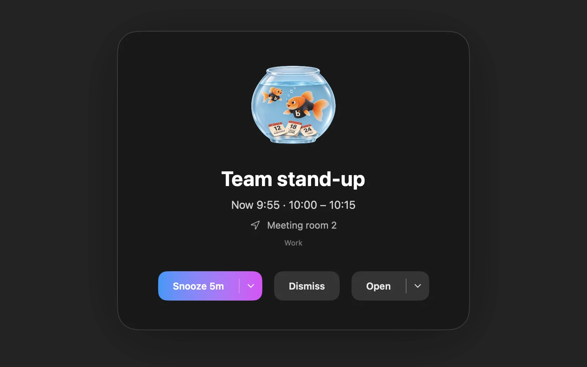
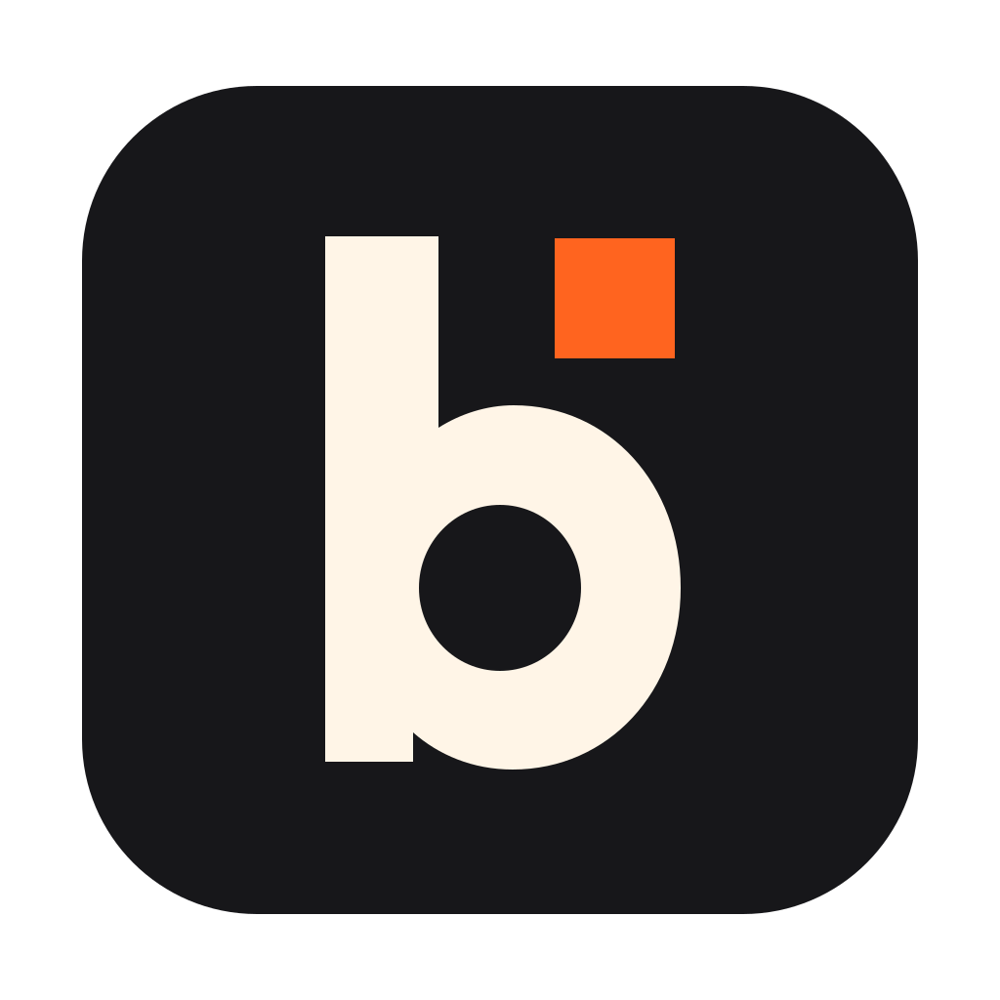

Alerts you can't miss
A popup or a full-screen alert a few minutes before each meeting, in one of four styles. Snooze, dismiss or join with a single key.


Baplet
Stay focused. Join meetings on time.
Get lost in your work without watching the clock. Baplet keeps an eye on your calendar and makes sure you look up in time for the next meeting.
Heads-up: Baplet isn't signed by Apple yet, so macOS warns you the first time you open it. It takes one extra step — see how to install.
A popup or a full-screen alert a few minutes before each meeting, in one of four styles. Snooze, dismiss or join with a single key.

Press your own global shortcut from any app to see what's left of your day. Pick a meeting with the arrow keys and press Return to join.

Google Meet, Zoom, Teams, Webex and more open in the browser — and Chrome, Edge, Brave, Vivaldi or Firefox profile — you choose.

A small countdown appears a few minutes before each meeting. Open the menu to see what's coming up, and pick a meeting with the arrow keys there too. Works with every calendar in the macOS Calendar app: iCloud, Google, Exchange and others.

New to Baplet? The docs cover installing, the keyboard shortcuts, the settings and updating.